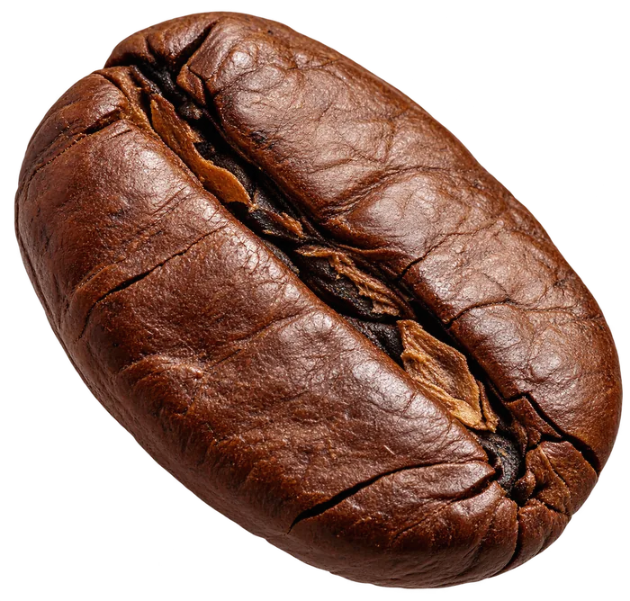
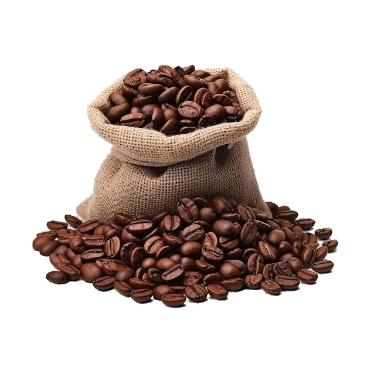

Descoberta em cada xícara
Seu café de sempre não precisa ser sempre igual.
Conheça 50+ maneiras de fazer café em um guia digital pensado para quem quer variar a rotina, experimentar novas ideias e aproveitar melhor esse ritual — sem precisar complicar.
Quero acessar por R$ 24,99
Material digital • checkout externo • sem frete
- Ideias para sair do café de sempre
- Consulta fácil pelo celular
- Conteúdo organizado e direto ao ponto

Talvez o café não precise ser sempre igual
O hábito pode continuar. A experiência pode mudar.
É comum encontrar um preparo que funciona e repetir a mesma xícara todos os dias. Só que café também pode ser descoberta: outra combinação, outra textura, outro jeito de servir, outro momento.
O guia nasce dessa ideia simples: mostrar possibilidades sem transformar café em algo complicado.
Um universo que não para de crescer
Café está em todo lugar — de cafeterias autorais a grandes marcas.
O café também vive em marcas, cafeterias e experiências que ajudaram a popularizar diferentes estilos de consumo. As referências abaixo são apenas editoriais e não indicam parceria ou afiliação.
STARBUCKSreferência editorial
WE COFFEEreferência editorial
THE COFFEEreferência editorial
NESPRESSOreferência editorial
3 CORAÇÕESreferência editorial
ORFEUreferência editorial
Do grão à xícara
Cada preparo começa no mesmo lugar — e pode terminar em experiências completamente diferentes.
Origem, moagem, proporção, temperatura, textura e cultura mudam o resultado. É exatamente esse repertório que torna o café tão interessante.

arraste para explorar
Café pelo mundo
A mesma bebida atravessa culturas — e muda completamente de personalidade.
Do preparo curto e intenso ao ritual demorado, cada lugar criou maneiras próprias de servir, combinar e apreciar café. O guia parte dessa curiosidade para ampliar seu repertório.
🇧🇷
Brasilorigem & tradição🇮🇹
Itáliaespresso & ritual🇹🇷
Turquiapreparo tradicional🇪🇹
Etiópiaberço do café🇻🇳
Vietnãreceitas marcantes🇨🇴
Colômbiacafés reconhecidos🇲🇽
Méxicosabores & especiarias🇯🇵
Japãoprecisão & filtrados🇫🇷
Françacafés & encontros🇵🇹
Portugalbica & tradição🇨🇺
Cubacafé forte & doce🇸🇪
Suéciacultura do fikaDe origens tradicionais a rituais urbanos, o café muda de linguagem sem perder a essência: a mesma bebida pode contar histórias completamente diferentes.
O que é
Um guia digital para ampliar seu repertório de café.
Você abre, escolhe uma ideia e explora uma possibilidade diferente. O foco é organização, curiosidade e praticidade.
- Mais de 50 ideias e preparos
- Conteúdo organizado para consulta
- Opções para diferentes momentos
- Combinações e referências práticas
- Acesso digital
- Leitura confortável no celular
O que você vai encontrar
Ideias para diferentes vontades, momentos e níveis de curiosidade.
Variações práticas
Para quando você quer mudar a experiência sem transformar o preparo em um projeto.
Novas combinações
Inspirações para explorar sabores, apresentações e maneiras diferentes de aproveitar café.
Momentos diferentes
Ideias para a rotina, uma pausa mais tranquila ou quando você quer servir algo especial.
Consulta simples
Um material pensado para você voltar sempre que bater vontade de experimentar algo novo.
100% digital
Seu entregável
Um material digital feito para você escolher o que quer descobrir primeiro.
Após a compra, o conteúdo é acessado online. A proposta é que você possa navegar por uma página organizada e selecionar a experiência que deseja explorar.
🌍 Por cultura e país
☕ Espresso
🥛 Cappuccino
🫗 Latte
🍨 Gelato & combinações
✨ Outras possibilidades
Importante: a imagem representa o produto digital. Não há envio de livro físico; o conteúdo é entregue por acesso online.
Seu café pode ter muito mais possibilidades do que parece.
Benefícios
Mais repertório para quem gosta de café — sem precisar virar barista.
Saia do café de sempre
Tenha ideias prontas para quando quiser variar sem ficar procurando inspirações soltas.
Descubra novas combinações
Explore outras formas de montar e aproveitar sua bebida favorita.
Tenha opções para diferentes momentos
Do café rápido àquele momento em que você quer preparar algo com mais intenção.
Consulte quando quiser
Abra no celular e escolha uma ideia sempre que a rotina pedir algo diferente.
Para quem é
Para quem gosta de café e sente curiosidade de explorar um pouco mais.
Quem ama caféQuem prepara em casaQuem gosta de experimentarQuem quer variar a rotinaQuem recebe pessoasQuem busca ideias práticas
O que ele não pretende ser: um curso técnico profissional, uma formação de barista ou um manual de equipamentos avançados.
Sua próxima xícara começa com uma ideia nova
50+ Maneiras de Fazer Café
Um guia digital para descobrir novos jeitos de preparar, combinar e aproveitar café no dia a dia.
- Acesso digital
- Conteúdo organizado
- Consulta fácil no celular
- Pagamento pelo checkout externo
Oferta especial
De R$ 99,90
Por apenas
R$ 24,99
Por tempo limitado
Condição promocional termina em:
00:00:00
Pagamento processado em ambiente de checkout externo.
Um guia para voltar várias vezes
Não é sobre decorar receitas. É sobre ter repertório à mão.
Escolha
Abra o guia e encontre uma ideia compatível com seu momento.
Experimente
Teste uma nova possibilidade sem precisar mudar toda a sua rotina.
Repita do seu jeito
Use as ideias como ponto de partida e descubra seus favoritos.
FAQ
Dúvidas frequentes
Você recebe acesso a um material digital organizado com mais de 50 maneiras de explorar café. A navegação foi pensada para você escolher por cultura, país ou estilo de bebida e encontrar uma nova possibilidade para experimentar.
É um produto 100% digital. A imagem do livro representa visualmente o conteúdo, mas não há envio físico: o material é acessado online, sem depender de frete ou entrega pelos Correios.
Não. O conteúdo foi pensado para quem gosta de café e quer ampliar o repertório de forma prática. Você pode começar pelas opções que combinam com o que já tem em casa e avançar conforme sua curiosidade.
Sim. O acesso é digital e a experiência é pensada para consulta em telas menores, permitindo abrir o material no celular e escolher uma ideia sempre que quiser preparar algo diferente.
Mais possibilidades. A mesma paixão por café.
Escolha uma nova maneira de aproveitar sua próxima xícara.
Tenha um repertório digital com 50+ ideias para consultar quando quiser sair do automático e experimentar algo diferente.
- Produto digital
- 50+ possibilidades
- Leitura prática